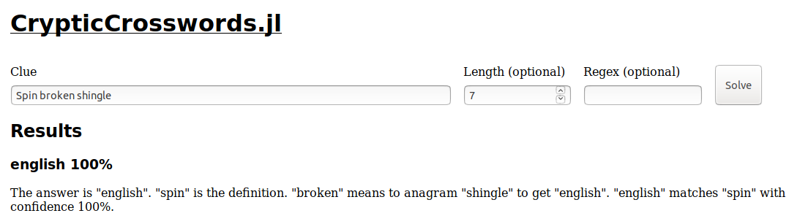
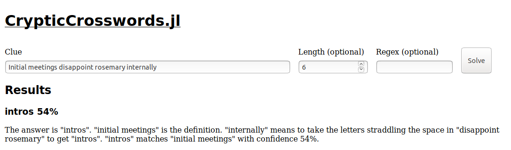
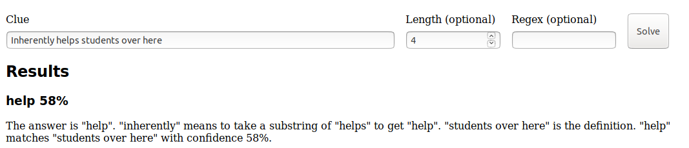

<!doctype html>
<html lang="en">
    <head>
        <meta charset="utf-8">
        <meta name="viewport" content="width=device-width, initial-scale=1.0, maximum-scale=1.0, user-scalable=no">

        <title>CrypticCrosswords.jl</title>
        <link rel="stylesheet" href="./css/reveal.css">
        <link rel="stylesheet" href="./css/theme/serif.css" id="theme">
        <link rel="stylesheet" href="./css/highlight/github.css">
        <link rel="stylesheet" href="./css/print/paper.css" type="text/css" media="print">


    </head>
    <body>

        <div class="reveal">
            <div class="slides"><section ><section data-markdown><script type="text/template">

<style type="text/css">
.reveal ul {
    font-size: smaller;
}
</style>

### The Linguistics of Puzzles: Solving Cryptic Crosswords in Julia

Robin Deits

July 23, 2019
</script></section><section data-markdown><script type="text/template">
### Background

* Roboticist by day
    * Just finished my PhD at MIT, now at Boston Dynamics
    * Helped found the [JuliaRobotics](http://www.juliarobotics.org/) organization to develop and promote open-source robotics tools in Julia
* Puzzler by...also day
    * Helped write (with >100 of my closest friends) the [2018 MIT Mystery Hunt](https://www.mit.edu/~puzzle/2018/)
    * Helped write 13th and 15th Boston Area Puzzle Hunt League (BAPHL) puzzle hunts
    * Spent more money on escape rooms than I am willing to admit
</script></section><section data-markdown><script type="text/template">
### Cryptic (a.k.a. British-Style) Crosswords

* If you enjoy crosswords but wish they had more esoteric rules and vocabulary to memorize, then...
    1. You're not entirely normal (that's OK)
    2. Cryptic crosswords may be for you
</script></section><section data-markdown><script type="text/template">
### Types of Crosswords

* An American-style crossword consists of a grid of letters and clues like:
    * "Initial meetings (6)" (answer: INTROS)
    * "Naked (4)" (answer: BARE)
    * "Spin (7)" (answer: ENGLISH)
* These clues are often somewhat ambiguous:
    * "Naked (4)" could also be "NUDE"
    * "Spin (7)" could also be "JOYRIDE"
* The primary way you disambiguate the answers is through filling out the crossword grid.
</script></section><section data-markdown><script type="text/template">
### Types of Crosswords

* Cryptic crosswords have clues which operate differently.
* Each clue points to a single answer in *two different ways*, typically by providing a *definition* and a *wordplay*, mixed together to obscure which part is which.
* This is much easier to explain by example.
</script></section><section data-markdown><script type="text/template">
### Cryptic Clues by Example

* Let's start with our non-cryptic clue:
    * "Initial meetings (6)" (answer: INTROS)
* A cryptic clue for this answer might look like:
    * "Initial meetings disappoint Rosemary internally (6)
* This might sound like a sentence, but that's a distraction. Instead, we need to split out the *wordplay* and the *definition*
    * In this case, "internally" is a clue to look for letters inside another phrase:
        * disappoINTROsemary &rarr; INTROS
    * The remaining words must be the definition:
        * "initial meetings" is a good definition for INTROS
* We got INTROS both from wordplay and from the definition, so it must be the answer to the clue.
</script></section><section data-markdown><script type="text/template">
### Cryptic Clues by Example

* Let's try another cryptic clue:
    * "Initially babies are naked (4)"
* Again, we need to find the *wordplay* and the *definition*:
* Let's start with the wordplay:
    * "initially" is a clue to take the first letter, so we take the first letter of "babies" to get B
    * We also have the word "are" in the clue, so we can combine that with B to get BARE
* Now the definition:
    * "naked" is a good definition for BARE
* Again, we have the same answer (BARE) clued in two different ways.
</script></section><section data-markdown><script type="text/template">
### Cryptic Clues by Example

* One more cryptic clue:
    * "Spin broken shingle (7)"
* We need to find the *wordplay* and the *definition*:
* Let's start with the wordplay:
    * "broken" is a clue to take an *anagram*, so let's take an anagram of "shingle"
    * One possible anagram of "shingle" is ENGLISH
* Now the definition:
    * "spin" is a good match for ENGLISH (in tennis, for example)
* The answer to the clue is ENGLISH, which matches the wordplay and the definition.
</script></section><section data-markdown><script type="text/template">
### Cryptic Clues by Example

* Now you try:
    * "Couch is unfinished until now (4)"
</script></section><section data-markdown><script type="text/template">
### CrypticCrosswords.jl

* CrypticCrosswords.jl is a Julia tool designed to do exactly the process I described above: breaking a cryptic clue up into its wordplay and definition and finding an answer which is a good match for both.
* It can't solve every cryptic clue, but it often does a pretty good job...
* You can find an interactive version of the solver at <http://cryptics.robindeits.com>
    * Note that this is running on a single under-powered web server, so you will get better performance runnning the code yourself.
</script></section><section data-markdown><script type="text/template">
### CrypticCrosswords.jl Demo

* Here is the top result produced by CrypticCrosswords.jl for each of the clues we've seen so far:
    * "Spin broken shingle (7)"


</script></section><section data-markdown><script type="text/template">
### CrypticCrosswords.jl Demo

* "Initially babies are naked (4)"


</script></section><section data-markdown><script type="text/template">
### CrypticCrosswords.jl Demo

* "Initial meetings disappoint Rosemary internally (6)"


</script></section><section data-markdown><script type="text/template">
### CrypticCrosswords.jl Demo

* "Couch is unfinished until now (4)"


</script></section><section data-markdown><script type="text/template">
### CrypticCrosswords.jl Demo

* Of course, the solver doesn't always work:
    * "Inherently helps students over here (4)"



* The answer should be PSST from "helPSSTudents", but the solver has no idea that PSST matches "over here".
</script></section><section data-markdown><script type="text/template">
### How It Works

* CrypticCrosswords.jl solves a cryptic clue by going through several steps:
    * First, we generate all of the possible ways to *parse* the clue into definition and wordplay components
    * For each possible parse, we apply the appropriate wordplay functions to see what its wordplay produces
    * We then check each possible wordplay output against the parsed definition to see if they match in meaning
    * Finally, we generate a human-readable explanation of the N best outputs (sorted by how well the wordplay matches the definition).
</script></section><section data-markdown><script type="text/template">


* The cryptic crossword solver has a few components, all of which are implemented entirely in Julia:
    * [rdeits/ChartParsers.jl](https://github.com/rdeits/ChartParsers.jl) implements the low-level parsing logic which turns cryptic clues into all of the possible combinations of wordplay and definitions they could represent.
    * [rdeits/CrypticCrosswords.jl](https://github.com/rdeits/CrypticCrosswords.jl) includes a context-free grammar representing the structure of a cryptic clue as well as implementations of a variety of wordplay techniques.
    * [rdeits/CrypticServer.jl](https://github.com/rdeits/CrypticServer.jl) includes a very simple web server built on top of Mux.jl to host an interactive cryptic crossword solver.
</script></section><section data-markdown><script type="text/template"></script></section></section></div>
        </div>

        <script src="./lib/js/head.min.js"></script>
        <script src="./js/reveal.js"></script>

        <script>
            function extend() {
              var target = {};
              for (var i = 0; i < arguments.length; i++) {
                var source = arguments[i];
                for (var key in source) {
                  if (source.hasOwnProperty(key)) {
                    target[key] = source[key];
                  }
                }
              }
              return target;
            }

            // Optional libraries used to extend on reveal.js
            var deps = [
              { src: './lib/js/classList.js', condition: function() { return !document.body.classList; } },
              { src: './plugin/markdown/marked.js', condition: function() { return !!document.querySelector('[data-markdown]'); } },
              { src: './plugin/markdown/markdown.js', condition: function() { return !!document.querySelector('[data-markdown]'); } },
              { src: './plugin/highlight/highlight.js', async: true, callback: function() { hljs.initHighlightingOnLoad(); } },
              { src: './plugin/zoom-js/zoom.js', async: true },
              { src: './plugin/notes/notes.js', async: true },
              { src: './plugin/math/math.js', async: true }
            ];

            // default options to init reveal.js
            var defaultOptions = {
              controls: true,
              progress: true,
              history: true,
              center: true,
              transition: 'default', // none/fade/slide/convex/concave/zoom
              dependencies: deps
            };

            // options from URL query string
            var queryOptions = Reveal.getQueryHash() || {};

            var options = {"transition":"fade","center":false,"slideNumber":true};
            options = extend(defaultOptions, options, queryOptions);
        </script>


        <script>
            Reveal.initialize(options);
        </script>
    </body>
</html>
